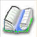
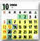

Why is this program free?
I wrote this program to help my wife lose weight. I was not impressed with the functionality of any of the other
programs available. After going a little overboard, I decided to let everyone else use this program. Please enjoy the program.
How do I get started?
- The program is installed, so you are doing well. Now you must set up the program. Please enter the needed information to
set up the program. The setup wizard will help you with this.
The program requires you to set up a username and password. You can use any combination you like. This keeps your personal information
personal and makes this program multi-user.
- The program opens on the webpage. You can get all kinds of help on the webpage, as well as being able to use our free resources.
- Now click on the apple to the left to enter your calories. You start by clicking the first cell and enter your search keywords. Try to avoid brand names. For
example instead of "Smuckers Grape Jelly" use "grape" and "jelly". Then select the unit and number of servings. The sum of the calories will show at the bottom.
- Click the dumbbells to enter your activities. Now you can enter your exercises. This is done by clicking on
the "Exercise" Column and entering your exercise search term. Again general terms work best. The exercises are special that they show you what units are needed.
So "Bicycling (min)" means that you should enter how many minutes you have bicycled, but "Bicycling(miles/minutes)" Means you should enter
miles and then minutes seperated by a slash i.e. 13/60 means 13 miles in 60 minutes. I know that this is a little complicated, but it is really powerful for activities.
One of the most important activities for weight loss is walking. You should enter the number of steps that you have taken each day by typing "Walking (steps)" and then the number of steps that
you have taken.
- Now click the book to enter your journal information for the day. Here you should keep a record of your weight and energy levels. You will also find all the
graphs and progress reports here.
- Last(for this quickstart) the meal planner makes it possible to plan ahead. The meal planner has spaces to plan out a whole week. Just drag meals from the
toolbar to the right into the place that you would like them to be. You must make meals first, so use the new meal button to create your meals. You can also make meals as you go along using the
calorie counter. Watch the Help Movies for more information.
I need a little more help with my diet
This program is an extension of the free website. If you wish, there are free meal plans, recipes and more that can be
downloaded into the program from the website. You can
also contribute to our continued success by uploading recipes and food items. Hopefully you will find the website as
useful as the program. It is also completely free. I would recommend that you get a username and password from the website first, but this
is not required.
Calorie Balance Diet
What about bugs?
Last, while I have tried really hard to make sure there are no bugs, some still slip through. I cannot affort a
staff to check the software, so I ask that you report those bugs that you find. If you think the program is hard to use
tell me in what way. If it does not work, please tell me how. I love to hear bug reports. There is an item at the top
of the program to easily report your bugs. If you just have a suggestion, please tell me. The ads on the website barely
cover the hosting fees, so please give me a ego boost by giving feedback.
Please Enjoy
|